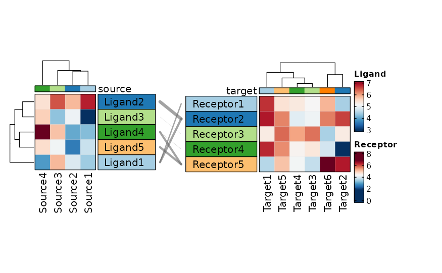

Draw two heatmaps side-by-side with spline link lines connecting matching rows across the two heatmaps. This is the public, exported interface for creating linked-heatmap visualisations.
A typical use case is visualising ligand–receptor interactions: the left heatmap shows ligand expression (rows = ligands, columns = cell sources), the right heatmap shows receptor expression (rows = receptors, columns = cell targets), and link curves connect each ligand to its cognate receptor(s).
Usage
LinkedHeatmap(
data,
values_by,
values_fill = NA,
name = NULL,
split_by = NULL,
split_by_sep = "_",
rows_by = NULL,
rows_by_sep = "_",
rows_split_by = NULL,
rows_split_by_sep = "_",
columns_by = NULL,
columns_by_sep = "_",
columns_split_by = NULL,
columns_split_by_sep = "_",
rows_data = NULL,
columns_data = NULL,
keep_na = FALSE,
keep_empty = FALSE,
rows_orderby = NULL,
columns_orderby = NULL,
columns_name = NULL,
columns_split_name = NULL,
rows_name = NULL,
rows_split_name = NULL,
palette = "RdBu",
palcolor = NULL,
palreverse = FALSE,
pie_size_name = "size",
pie_size = NULL,
pie_values = "length",
pie_name = NULL,
pie_group_by = NULL,
pie_group_by_sep = "_",
pie_palette = "Spectral",
pie_palcolor = NULL,
bars_sample = 100,
label = identity,
label_size = 10,
label_color = "black",
label_name = "label",
mark = identity,
mark_color = "black",
mark_size = 1,
mark_name = "mark",
violin_fill = NULL,
boxplot_fill = NULL,
dot_size = 8,
dot_size_name = "size",
legend_items = NULL,
legend_discrete = FALSE,
legend.position = "right",
legend.direction = "vertical",
lower_quantile = 0,
upper_quantile = 0.99,
lower_cutoff = NULL,
upper_cutoff = NULL,
add_bg = FALSE,
bg_alpha = 0.5,
add_reticle = FALSE,
reticle_color = "grey",
cluster_columns = NULL,
cluster_rows = NULL,
show_row_names = NULL,
show_column_names = NULL,
border = TRUE,
title = NULL,
title_params = NULL,
column_title = NULL,
row_title = NULL,
na_col = "grey85",
row_names_side = "right",
column_names_side = "bottom",
row_annotation = NULL,
row_annotation_side = NULL,
row_annotation_palette = NULL,
row_annotation_palcolor = NULL,
row_annotation_type = NULL,
row_annotation_params = NULL,
row_annotation_agg = NULL,
column_annotation = NULL,
column_annotation_side = NULL,
column_annotation_palette = NULL,
column_annotation_palcolor = NULL,
column_annotation_type = NULL,
column_annotation_params = NULL,
column_annotation_agg = NULL,
link_width_by = NULL,
link_width_scale = 5,
link_color = "grey40",
link_alpha = 0.6,
flip = FALSE,
alpha = 1,
seed = 8525,
padding = 15,
base_size = 1,
aspect.ratio = NULL,
draw_opts = list(),
layer_fun_callback = NULL,
cell_type = c("tile", "bars", "label", "mark", "label+mark", "mark+label", "dot",
"violin", "boxplot", "pie"),
cell_agg = NULL,
combine = TRUE,
nrow = NULL,
ncol = NULL,
byrow = TRUE,
axes = NULL,
axis_titles = axes,
guides = NULL,
design = NULL,
...
)Arguments
- data
A data frame in long format. Each row represents one observation; columns specify row/column membership for both left and right heatmaps as well as the values to encode as color.
- values_by
Default column name for heatmap cell values. Used as fallback when
left_values_by/right_values_byare not explicitly provided via....- values_fill
A value used to fill missing cells in the matrix (passed to
HeatmapAtomic). Default isNA(cells with no data are left empty).- name
Default legend title for the colour scale. Used as fallback when
left_name/right_nameare not provided via.... The suffixes" (left)"/" (right)"are appended automatically.- split_by
The column(s) to split data by and plot separately.
- split_by_sep
The separator for multiple split_by columns. See
split_by- rows_by
Default column for rows in both heatmaps. Used as fallback for
left_rows_by/right_rows_by.- rows_by_sep
Separator for concatenated
rows_bycolumns.- rows_split_by
Optional column name to split the rows of both heatmaps into groups (passed as
row_split). When provided, row names in the link table are prefixed with the split level to disambiguate rows across splits.- rows_split_by_sep
Separator for concatenated
rows_split_bycolumns.- columns_by
Default column for columns in both heatmaps. Used as fallback for
left_columns_by/right_columns_by.- columns_by_sep
Separator for concatenated
columns_bycolumns.- columns_split_by
Default column to split columns into groups. Used as fallback for
left_columns_split_by/right_columns_split_by.- columns_split_by_sep
Separator for concatenated
columns_split_bycolumns.- rows_data, columns_data
Optional data frames providing additional row / column metadata for annotations. Passed through to
HeatmapAtomic.- keep_na, keep_empty
Passed through to
HeatmapAtomic. Seecommon_argsfor details.- rows_orderby, columns_orderby
Column name to order rows / columns by (disables clustering when set).
- columns_name
Display name for the column annotation.
- columns_split_name
Display name for the column split annotation.
- rows_name
Display name for the row annotation.
- rows_split_name
Display name for the row split annotation.
- palette
A character string naming a palette (see
show_palettes) or a character vector of colours for the main heatmap colour scale. Default"RdBu". Applied to both heatmaps unless overridden per-side via....- palcolor
A custom colour vector that overrides
palettefor the main heatmap colour scale. Applied to both heatmaps unless overridden per-side.- palreverse
Logical; if
TRUE, reverse the palette direction.- pie_size_name
Legend title for the pie size when
cell_type = "pie".- pie_size
A numeric value or function returning the pie radius. When a function, it receives the count of groups in the pie and should return a radius.
- pie_values
A function or string (convertible via
match.arg) to compute the value represented by each pie slice. Default"length"counts observations per group.- pie_name
Default name for the pie legend. Used as fallback for
left_pie_name/right_pie_name.- pie_group_by
Default column(s) for pie grouping. Used as fallback for
left_pie_group_by/right_pie_group_by.- pie_group_by_sep
Separator for concatenated
pie_group_bycolumns.- pie_palette, pie_palcolor
Palette and custom colours for pie slice fill colours.
- bars_sample
Number of observations sampled per cell when
cell_type = "bars". Default 100.- label
A function to compute text labels when
cell_type = "label"(or"label+mark"). Receives the aggregated value for a cell and optionally row/column indices and names. SeeHeatmapAtomicfor the full dispatch contract.- label_size
Default point size for label text (used as fallback when the
labelfunction does not return asizefield).- label_color
Default colour for label text (used as fallback when the
labelfunction does not return acolorfield).- label_name
Legend title for the label colour scale.
- mark
A function to compute mark symbols when
cell_type = "mark"(or"label+mark"). Same dispatch contract aslabel. SeeHeatmapAtomicfor supported mark types.- mark_color
Default mark colour (fallback).
- mark_size
Default mark stroke width in pt (fallback).
- mark_name
Legend title for the mark colour scale.
- violin_fill
A character vector of colours to use as fill for violin plots when
cell_type = "violin". IfNULL, the annotation colour is used.- boxplot_fill
A character vector of colours to use as fill for boxplots when
cell_type = "boxplot". IfNULL, the annotation colour is used.- dot_size
Dot size when
cell_type = "dot". Can be a numeric value or a function.- dot_size_name
Legend title for the dot size.
- legend_items
A named numeric vector specifying custom legend entries for the main colour scale. Names become the displayed labels.
- legend_discrete
Logical; if
TRUE, treat the main colour scale as discrete.- legend.position
A character string specifying where to place the combined legend:
"right"(default),"left","top","bottom", or"none".- legend.direction
Legend stacking direction:
"vertical"(default) or"horizontal".- lower_quantile, upper_quantile
Quantiles used for clipping the colour scale when
lower_cutoff/upper_cutoffareNULL. Defaults are 0 and 0.99 respectively.- lower_cutoff, upper_cutoff
Explicit cutoffs for the colour scale. Values outside the range are clamped (winsorized). Override
lower_quantile/upper_quantilewhen set.- add_bg
Logical; if
TRUE, add a background fill behind non-tile cell types. Not used forcell_type = "tile"or"bars".- bg_alpha
Numeric in \([0, 1]\) for background transparency.
- add_reticle
Logical; if
TRUE, draw a reticle (crosshair pattern) over the heatmap.- reticle_color
Colour for the reticle lines.
- cluster_columns
Logical; cluster columns in both heatmaps.
NULLletsHeatmapAtomicdecide.- cluster_rows
Default clustering setting for rows. Used as fallback for
left_cluster_rows/right_cluster_rows.- show_row_names, show_column_names
Logical; show row/column names.
- border
Logical; draw a border around each heatmap. Default
TRUE.- title
A character string for the overall plot title. A function can be used to generate a dynamic title from the default. Note that,
left_titleandright_titleare used to set the title for each heatmap, andtitleis used to set the overall title for the combined plot.- title_params
A list of parameters passed to
grid::grid.text()to control the title appearance. Default islist(gp = gpar(fontsize = 14, fontface = "bold")).- column_title, row_title
Character title displayed above the columns / beside the rows of each heatmap.
- na_col
Colour used for
NAcells. Default"grey85".- row_names_side
Default side for row names. Used as fallback for
left_row_names_side/right_row_names_side. Default"right".- column_names_side
Side for column names. Default
"bottom".- row_annotation
A structured list specifying row annotations. See
HeatmapAtomicfor the full specification.- row_annotation_side
Deprecated: use
row_annotationwith thesidesub-key instead. Used as fallback forleft_row_annotation_side/right_row_annotation_side. Default"left".- row_annotation_palette
Deprecated: use
row_annotationwith thepalettesub-key instead.- row_annotation_palcolor
Deprecated: use
row_annotationwith thepalcolorsub-key instead.- row_annotation_type
Deprecated: use
row_annotationwith thetypesub-key instead.- row_annotation_params
Deprecated: use
row_annotationwith theparamssub-key instead.- row_annotation_agg
Deprecated: use
row_annotationwith theaggsub-key instead.- column_annotation
A structured list specifying column annotations. See
HeatmapAtomicfor the full specification.- column_annotation_side
Deprecated: use
column_annotationwith thesidesub-key instead.- column_annotation_palette
Deprecated: use
column_annotationwith thepalettesub-key instead.- column_annotation_palcolor
Deprecated: use
column_annotationwith thepalcolorsub-key instead.- column_annotation_type
Deprecated: use
column_annotationwith thetypesub-key instead.- column_annotation_params
Deprecated: use
column_annotationwith theparamssub-key instead.- column_annotation_agg
Deprecated: use
column_annotationwith theaggsub-key instead.- link_width_by
Optional column name in
datawhose values determine the stroke width of each link line (e.g. interaction strength). Values are min-max scaled to \([0, 1]\) and multiplied bylink_width_scale.- link_width_scale
Numeric scaling factor applied to the normalised link intensity values to produce final line widths (
lwd). Default 5.- link_color
Colour of the link spline curves. Default
"grey30".- link_alpha
Alpha transparency of link curves in \([0, 1]\). Default 0.8.
- flip
Logical; must be
FALSEfor linked heatmaps (flipping is not supported). DefaultFALSE.- alpha
Alpha transparency for heatmap cells in \([0, 1]\).
- seed
Random seed for reproducibility. Default 8525.
- padding
Padding around the heatmap in CSS order (top, right, bottom, left). Supports 1–4 values. Default 15 (mm).
- base_size
A positive numeric scalar used as a scaling factor for the overall heatmap size. Default 1 (no scaling). Values > 1 enlarge all cell dimensions proportionally.
- aspect.ratio
Height-to-width ratio of a single heatmap cell. When
NULL(default), sensible defaults are chosen percell_type(e.g. 1 for tiles, 0.5 for bars, 2 for violins).- draw_opts
A named list of additional arguments passed to
draw,HeatmapList-method. Internally managed arguments (padding,show_heatmap_legend, etc.) take precedence.- layer_fun_callback
A function to add custom graphical layers on top of each heatmap cell. Receives
j,i,x,y,w,h,fill,sr,sc. SeeHeatmapfor details.- cell_type
The type of cell to render. One of
"tile"(default),"bars","label","mark","label+mark"(or"mark+label"),"dot","violin","boxplot","pie". Different cell types use differentcell_fun/layer_funimplementations.- cell_agg
A function to aggregate values within each cell when
cell_type = "tile"or"label". Default ismean.- combine
Whether to combine the plots into one when facet is FALSE. Default is TRUE.
- nrow
A numeric value specifying the number of rows in the facet.
- ncol
A numeric value specifying the number of columns in the facet.
- byrow
A logical value indicating whether to fill the plots by row.
- axes
A string specifying how axes should be treated. Passed to
patchwork::wrap_plots(). Only relevant whensplit_byis used andcombineis TRUE. Options are:'keep' will retain all axes in individual plots.
'collect' will remove duplicated axes when placed in the same run of rows or columns of the layout.
'collect_x' and 'collect_y' will remove duplicated x-axes in the columns or duplicated y-axes in the rows respectively.
- axis_titles
A string specifying how axis titltes should be treated. Passed to
patchwork::wrap_plots(). Only relevant whensplit_byis used andcombineis TRUE. Options are:'keep' will retain all axis titles in individual plots.
'collect' will remove duplicated titles in one direction and merge titles in the opposite direction.
'collect_x' and 'collect_y' control this for x-axis titles and y-axis titles respectively.
- guides
A string specifying how guides should be treated in the layout. Passed to
patchwork::wrap_plots(). Only relevant whensplit_byis used andcombineis TRUE. Options are:'collect' will collect guides below to the given nesting level, removing duplicates.
'keep' will stop collection at this level and let guides be placed alongside their plot.
'auto' will allow guides to be collected if a upper level tries, but place them alongside the plot if not.
- design
Specification of the location of areas in the layout, passed to
patchwork::wrap_plots(). Only relevant whensplit_byis used andcombineis TRUE. When specified,nrow,ncol, andbyroware ignored. Seepatchwork::wrap_plots()for more details.- ...
Additional arguments passed to
LinkedHeatmapAtomic. All parameters listed above (and those inherited fromLinkedHeatmapAtomic) can be specified withleft_orright_prefixes for per-side control (e.g.left_palette = "Blues",right_palette = "Reds"). Unprefixed arguments apply to both sides. Also forwarded toHeatmapafter prefix stripping.
Value
A patchwork object (class wrap_plots) with
height and width attributes (in inches). When
combine = FALSE, a named list of such objects, one per
split_by level.
Left / right specification
Parameters that differ between the two heatmaps are prefixed with
left_ or right_. Shared parameters (e.g. palette,
cell_type, cluster_columns) apply to both sides but can be
overridden per-side via the ... argument. Every parameter listed
below can also be passed with a left_ or right_ prefix in
... for full per-side control.
The ... argument is also forwarded to
Heatmap after prefix-stripping, allowing
direct access to ComplexHeatmap parameters (e.g.
left_row_names_gp, right_column_names_rot).
Split-by support
When split_by is provided, the data is partitioned into subsets
and an independent linked-heatmap pair is produced for each level. The
results are combined via wrap_plots according to
nrow, ncol, byrow, and design.
Per-split palette, palcolor, and legend.position can
be specified as named lists keyed by split level.
Dimension calculation
Cell dimensions are pre-computed from cell_type,
aspect.ratio, base_size, and the unique row/column counts
in the data (accounting for split groups). These exact dimensions are
passed to ComplexHeatmap::Heatmap so cells have guaranteed
physical sizes, ensuring that the two heatmaps' bodies align precisely
and that link line endpoints land on the correct rows. The final
height / width attributes on the returned object include
legend space and are clamped to \([4, 64]\) inches with aspect-ratio
correction.
Examples
# \donttest{
set.seed(8525)
# Define sparse ligand-receptor pairs
pairs_df <- data.frame(
ligand = c("Ligand1", "Ligand2", "Ligand3", "Ligand4", "Ligand5",
"Ligand1", "Ligand3", "Ligand5"),
receptor = c("Receptor1", "Receptor2", "Receptor1", "Receptor3", "Receptor4",
"Receptor5", "Receptor2", "Receptor5"),
stringsAsFactors = FALSE
)
sources <- paste0("Source", 1:4)
targets <- paste0("Target", 1:6)
# Expand pairs across all sources and targets
data <- merge(
merge(pairs_df, data.frame(source = sources, stringsAsFactors = FALSE)),
data.frame(target = targets, stringsAsFactors = FALSE)
)
data$split <- sample(c("A", "B"), nrow(data), replace = TRUE)
data$ligand_expr <- runif(nrow(data), 0, 10)
data$receptor_expr <- runif(nrow(data), 0, 10)
data$intensity <- runif(nrow(data), 0, 1)
if (requireNamespace("ComplexHeatmap", quietly = TRUE)) {
LinkedHeatmap(
data,
column_names_side = "top",
row_names_side = "right",
right_cluster_rows = FALSE,
left_show_row_names = TRUE,
right_show_row_names = TRUE,
left_row_names_side = "right",
left_rows_by = "ligand",
left_columns_by = "source",
left_values_by = "ligand_expr",
left_name = "Ligand",
right_rows_by = "receptor",
right_columns_by = "target",
right_values_by = "receptor_expr",
right_name = "Receptor",
link_width_by = "intensity"
)
}

# }